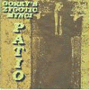
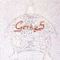
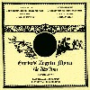
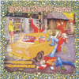

strange music page
overseas * * * gorky's zygotic mynci
#ゴーキーズザイゴティックマンキです。
なんか中古盤が無茶苦茶安く売ってて色々買っちゃいました。
ケヴィンエアーズとかインクレディブルストリングバンドとか
フェアポートコンベンションとか色々なのが聞こえてきます。
なんて言うか白昼夢っぽいトラッド。
オフィシャルページはここっす。
しょっぱなからイカれたFLASHムービー、いいっすね。
|
- gorky's zygotic mynci (album)
- gorky's zygotic mynci (single/etc)
|
#ゴーキーズです、初めて聴きました。尻手黒川線沿いの古本屋さんで、\600。良いお買い物でした。
中身はおポンチ系のなんかちょっとウネウネしたポップス、最近の人達みたいですけど、結構古い感じです、Incredble Stringes Bandとかに近いかな？確信犯。一枚目のアルバムみたいです。(2000.4.30)

- peanut dispenser
- lladd eich gwraig
- dafad yn siarad
- mr groovy
- ti! moses
- barbed wire
- miriam o farbel
- oren, mefus a chadno
- gwallt rhegi pegi
- sally webstar
- diamonds o monte carlo
- siwt nofio
- blessed are the meek
- reverend oscar marzaroli
- oren, mefus a chadno
- dean ser
- siwmper heb grys
- llenni ar gloi
- anna apera
- iwt nofio
- hi ar gan
- John Lawrence (guitars,backing vocals)(recorder on 11.)
- Euros Childs (vocals)(guitars on 16.)(organ,piano on 10.11.19-21.)
- Richard James (bass)
- Osian Evans (drums)
- Megan Childs (violin on 8.9.11.18.20.)(speaking vocie on 20.)
- Sion Lane (organ on 1.5.7.15.)
- Steffan Cravos (violin on 1.5.7.15.)(speaking voice on 15.)(effects on 18.19.)
- Cennwyn Brain (acoustic guitar on 4.5.15.)
- Sammy Davies (organ on 8.9.17.)
- Anwen Thomas (cello on 12.21.)
ANKST: ANKST-CD055 (1994)
#んで、今これ気付いたんですけど...7曲目"o,calorine"ってマッチングモウルの曲じゃないですか、しかもヘロヘロ演奏、更に9曲目"kevin ayers"ってー。そのまんま.....
やっぱり皆好きなんですね、カンタベリー音楽。全然知らないで買ったのでちょっとびっくり、きっと何かイイ臭いを感じ取ったんでしょう、私。
聴いた時に初期caravanみたいな雰囲気はちょっとだけ感じたんですけど、どっちかっていうとK.Ayersですね、この力の抜け具合は。
ゆるーいサイケポップ。好きなんだけど\400でした。(2000.10.23)
- thema o cartref
- beth syn'n digwydd i'r fuwch
- tatay
- y ffordd oren
- gwres prynhawn
- amsermaemaiyndod/cinema
- o,caroline
- naw.e.pimp
- kevin ayears
- when you hear the captain sing
- o,caroline II
- tatay (moog mix)
- anna apera
- anna apera
- gegin nos
- silff ffenest
- backward dog
ANKST: ANKST-047CD (1994)
- Bwyd Time
- Miss Trudy
- Paid Cheto Ar Pam
- Oraphis Yn Delphie
- Eating Salt Is Easy
- Gewn Ni Gorffen!
- Iechyd Da
- Ymwelwyr A Gwrachod
- The Telescope And The Bonfire
- The Man With Salt Hair
- The Game Of Eyes
- Blood Chant
- Ffarm-wr
- Impressionistic Soundscapes
- Euros Childs (vocals,keyboards)
- John Lawrence (guitars)
- Richard James (bass)
- Euros Rowlands (drums)
- Megan Childs (violin)
AVEX: AVCM-65005 (1995.7.21 - ANKST)
#忘れた頃にゴーキーズ、関内ディスクユニオンにて\800。
なんか気づくと昔のアルバムばっっかり買って(中古でしか買わないから)たんですけど、これは1998年の5枚目のアルバムです。
初めて聴いたときに思った「こいつら、本気か？？」みたいなキテレツさは影を潜めてて、穏やかなメロディーが印象的にきこえます。
トラッドとサイケの入り混じったちょっと懐かしいよーな、不安げな感じもする音。
(2001.5.18)

- the tidal wave
- dyle fi
- let's get together (in our minds)
- tsunami
- not yet
- only the sea makes sense
- softly
- frozen smile
- sweet johnny
- theme from gorky 5 (russian song)
- hush the warmth
- catrin
- fireside joys
- hwiangerdd mair
- Euros Childs (vocals,keyboards)
- John Lawrence (guitars)
- Richard James (bass)
- Euros Rowlands (drums,percussions)
- Megan Childs (violins,backing vocals)
- Gorwel Owen (bass on 1.)(teisco synth 11.)(harmonium on 12.)
- Lindsay Higgs (balalaika on 10.)
MERCURY MUSIC ENTERTAINMENT: PHCR-1663 (1998.11.11 - FONTANA)
#ゴーキーズの新譜。ライナーの情報によると、ギターとドラムが抜けちゃったみたいです。
かなり本気でトラッド/フォークの世界に近づいてきてるみたいです、アコギとフィドルの交錯するよーな音はいままでのKevin Ayersみたいなサイケ・ポップよりもRichard Thompsonとかの世界に近いような。
なんだか音響系にも(聴こうと思えば)聴こえてくる音の響き方が気持ち良いかも、長く聴けそうな一枚。

- The Blue Trees
- This Summer's Been Good From The Start
- Lady Fair
- Foot And Mouth '68
- Wrong Turnings
- Fresher Than The Sweetness In Water
- Face Like Summer
- Sbia Ar Y Seren
TOKUMA JAPAN COMMUNICATIIONS: TKCB-72045 (2000.10.30 - MANTRA RECORDINGS)
#このCDは3枚のE.P.を編集したゴーキーズ入門篇ってワケらしいです。"mereched yn neud gwallt eu gilydd" + "the game of eyes/pentref wrth mor" + "lanfwrog" です。詳しくはHP
こっちのページ(英語だけど)でdiscographyを確認しましょう。
ちなみに、9曲目
ソフトマシーンです、1stのK.Ayersの曲。
んでライナーが付いてます。やっぱりサイケな人達でコミューンみたいな生活してるみたいです....道理でフラワーな音がすると思いました、60年代後期の雰囲気。ギターのJ.Lauwrenceの好きなバンドがIncredible String Bandってのも納得。
ちなみにコレも\500でした。ゴーキーズのCDを\600以上出して買った事が無いです.....そんなに人気ないのかなぁ？ (2000.10.23)
- merched yn neud gwallt eu gilydd (girls doing each other's hair)
- methu aros tan haf (I can't wait for summer)
- cwpwrrd sadwrn (Saturday cupboards)
- bocs angelica (box angelica)
- miss trudy
- eira (snow)
- the game of eyes
- when you laugh at your own garden in a blazer
- why are we sleeping?
- mewn (in some language)
- pentref wrth y mor (village by the sea)
- Euros Childs (vocals,keyboards)
- John Lawrence (guitars)
- Richard James (bass)
- Euros Rowlands (drums)
- Megan Childs (violin)
AVEX: AVCM-65002 (original release 1994,1995 - ANKST)

#中野の中古屋さんで\300でした、田舎臭いおポンチな音。でもメロディアスで凄くイイと思うんですけどね。あんまりここのページで紹介してるのとは接点無いかも。
ウェールズのバンドみたいですね(今infoseekで探してみたけど、あんまり情報無かった...)
不思議な感じのバンド、他のCDも探してみようと思います。(2000.10.21)
- Lucy's Hamper
- Heart of Kentucky
- Jdim Yr Adar Yn Canu
- 2D
ANKST: ANKST-CD068 (1996)